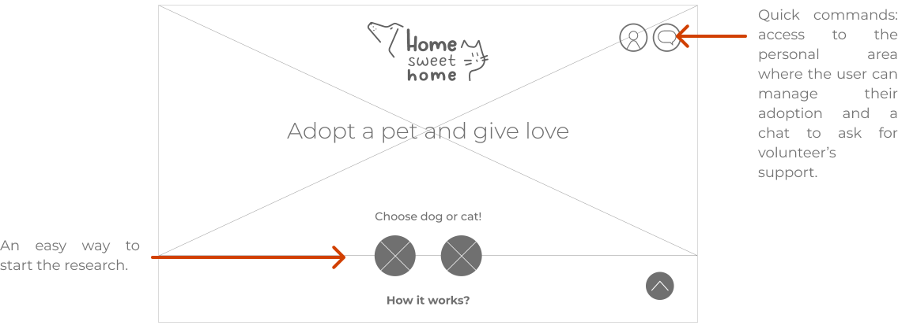
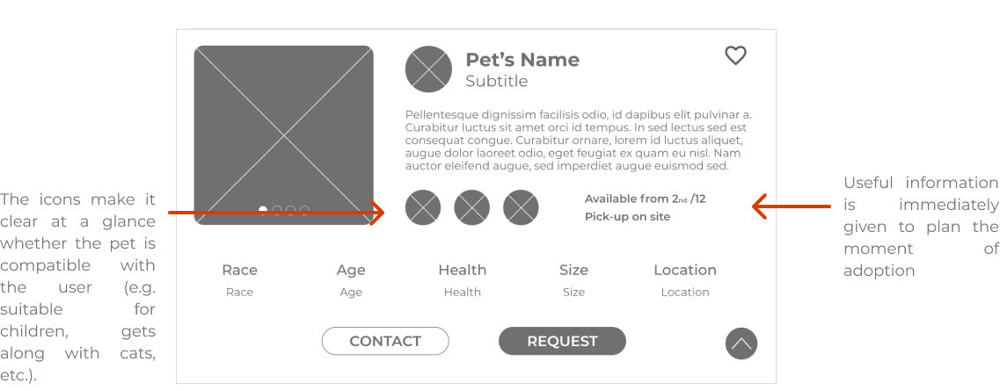
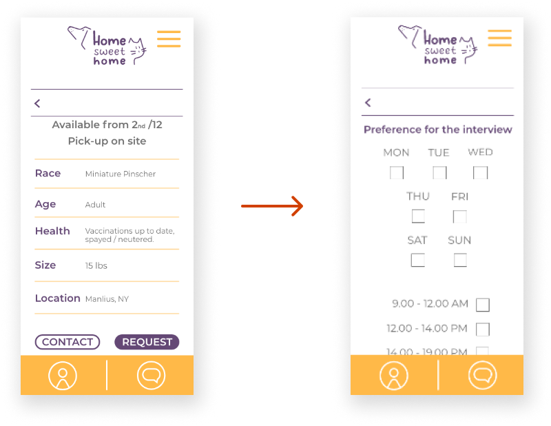
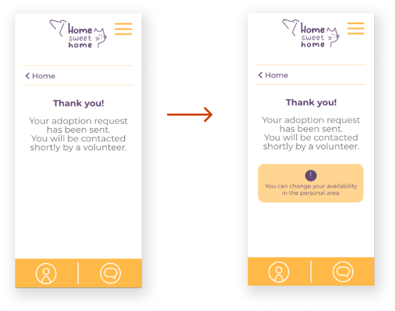

UX & UI DESIGN  GRAPHIC DESIGN
GRAPHIC DESIGN
January 2022
User Research
Branding
Wireframing
Prototyping
UX Design Professional
by Google
The adoption process is often long and complicated. People have no support after the adoption.
The goal is to create a help network before and after adoption, as well as improve control over
adoption families.
I interviewed a sample of people of different sex, age and origin
registered in groups for the adoption of animals on social medias.
I also interviewed a sample of people who work in the sector or who volunteer in associations
and
I asked them what are the difficulties they encounter.
It usually takes a long time to search for the right pet and then the times get longer in the approval phase by the volunteers
Little information on adoptable animals. It is not clear if pets have characteristics suitable for your situation.
It is necessary for volunteers to verify the adoptive family and their home, but the method takes a long time and often there are no volunteers available.
Especially when you are at the first experience you don't know how to behave and there isn't support.
I searched for ideas using the "Crazy Eight" method and after that I sketched 5 different interfaces and from these I selected the most interesting layouts. I prioritized a few things and a clear organization.
From the homepage you can easily access all the features of the app.
The pet presentation page is exhaustive and easy to read in order to ensure the user is safe in the selection phase.
Unmoderated usability study
Remote
6 people of different genders and 1 with a disability have been selected randomly
Each session
lasted 30 minutes.
I conducted an usability studies after the prototype to find problems and new ideas.
Users complain that the adoption process is slow because they are unable to respect the appointment with the volunteer due to personal commitments.
Users would like to find their suitable pet more easily.
More attention was needed on people with disabilities.
In the step following the application for adoption, I added a page for scheduling the interview.
I added a warning message to help people who want to change their availability.
